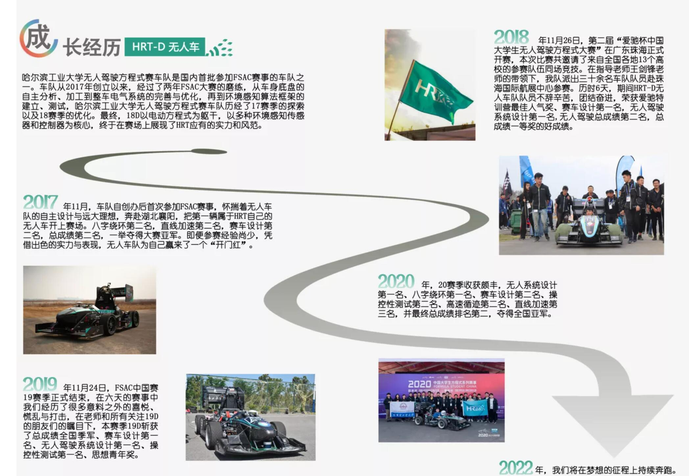
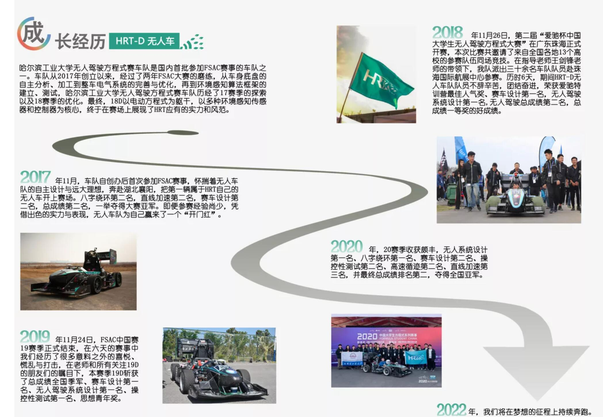

HRT D&E电气组（电子与智能驱动研究中心） 提前批科研训练活动开始啦！
HRT-D&E电气组前身为成立于2013年的HRT电气组，为面向国家新能源与智能汽车产业缺口，于2022年底，由无人电气组与电气组合并升级，隶属于中国顶级车队——HRT。旨在依托哈尔滨工业大学多学科基础研究的优势，系统化、集成化开展跨学科多领域合作，瞄准面向国家重大需求的前瞻性、关键性、创造性工程与应用技术研发，建设具有机制优势的创新型前沿实验室。
中心围绕突破国际智能电气领域的战略性、基础性、前沿性等相关重大科学问题，整合校内外资源，集聚了世界电子与智能技术研究的顶尖研究队伍，以智能计算、智能电路、智能结构及应用工程的交叉为突破点，以产业需求与重大任务为牵引，研究智能控制与驱动技术、核心器部件、系统集成与应用等理论与技术，并应用于电动无人驾驶方程式的研发和产业化。现有技术带头人3人，车队正高级研究人员17人，助理研究人员14人，其中ASR一人，ESO四人，由汽车工程学院王剑锋院长指导。是HRT规模最大的研究中心。
 

中心拥有拓竹顶级3D打印机X1、先进的DSA832E-TG频谱分析仪、高分辨率示波器 DHO924S等多款示波器、绿联NAS、单价4000+元的高端万用表、精准毫欧表、绝缘检测仪、足量万用表、焊台、热风枪等设备及足量电子器件。中心特别配备特批研究经费。
中心长期与CHROMA、普源精电、嘉立创、Tesla等国内外知名企业深度合作。并与感知组（无人系统）、底盘组、车身组等长期深度合作。
中心成立第一年，即获得中国大学生无人驾驶方程式大赛冠军、电动驾驶方程式大赛国家一等奖，各种国家级奖项十余项。并代表中国出席德国大学生方程式大赛系列，向世界展示我国方程式赛车不凡实力，并在多个知名会议上演讲。
1.高性能控制理论：
成员需掌握工程数学基础、动态系统建模与仿真→自动控制原理、现代控制理论→非线性控制→卡尔曼滤波→智能控制算法（模型预测控制、最优控制、模糊控制等）。本研究方向旨在赋能传统车辆控制，以实现精确化、最优化、智能化。
2.动力系统及运动与多物理场仿真研究：
驱动系统的电机原理+能量回收。学习电机的基本原理，并学习使用电机控制器；在此基础上，学习及设计能量回收策略。自主设计制作动力电池箱，包括电芯位置布局、高压线束规划、电池管理系统BMS调试开发、电芯热仿真等。电池箱是赛车的心脏，为电机和低压系统提供能源，驱动赛车的能量全部来源于这里。近600V的电压不仅让赛车动力澎湃，也让电气组的每个人心潮澎湃。应用carsim、carla、simulink等对控制算法进行仿真，实现控制算法在虚拟空间中的仿真、调参。COSMOL多物理场仿真研究电池箱的热学、力学等性能表现等。
3.嵌入式与计算机技术：
本方向目前研究ARM嵌入式开发，研究可运行linux等操作系统的高性能可编程电路。基于树莓派U5开发的无线数采系统，实现了数据无线自动采集、自动分析，大大方便了整车调试。基于STM32的软件和硬件开发，用于整车的多个系统，包括电子控制单元（ECU）、数据采集系统、赛车级智能仪表、遥控急停系统（RES）和紧急制动系统（EBS）无人转向以及用于行车制动的ESC。中心最新研发出小型高性能DCDC（可编程直流开关电源），打破了传统商家的技术垄断，填补了轻量级DCDC在赛车比赛的空白。目前正在研发的电池管理系统（BMS）涉及高可靠性硬件知识、先进信号处理算法等多学科知识，我们正在努力。
4.复杂非可编程逻辑电路：
负责整车电气安全，核心是电路设计。用电子元件搭建模拟、数字电路，实现需要的功能。熟练运用嘉立创EDA(专业版)等软件进行PCB设计。简简单单的电阻电容在一方电路板上创造无限可能。
5.集成拓扑结构开发：
本方向是赛车电气系统的重要组成部分，它负责将赛车的各个电子元件和传感器连接起来，实现信息和能量的传递。本系统的设计和制作需要考虑赛车的安全性、可靠性、性能和美观等多方面的因素，是一项既有趣又有挑战的工作。
6.高速电子与电磁兼容：
本中心是全国唯一拥有高性能频谱分析仪的车队实验室，控制器电磁干扰一直是所有车队的重要敌人。我们现在重点研究在高速开关干扰下的电磁兼容问题，实现整车电气系统稳定运营。
7.智能网联:研究整车通信系统。
目前本车队整车采用CAN通信网络，2024德国方程式团队研发出光纤通信网络用于方程式的整车通信，使赛车通信免于电磁干扰，并且通信速度大大提升。我们期待未来某天可以实现现代化的智能网联技术。
...
1.低压及控制系统
2.高压与驱动系统
未来可从事以上各个研究方向
1.热爱方程式赛车
2.抗压抗打击能力强（技术是在不断试错中进步）
3.动手能力强者、能肝者优先
4.对电子技术、电气技术、控制理论、计算机技术、电驱动技术、电磁场与无线技术、人工智能等感兴趣
5.我们团队各个成员来自信息科学与工程学院、汽车工程学院、紫丁香书院、计算机科学与技术学院、新能源学院、海洋工程学院、材料科学与工程学院等
我们欢迎所有专业的同学报名！专业不设限！
6.我们需要团队成员足够负责，愿意花费时间在车队上，而非能力很强！
7.本团队不建议出生在宁波并且对象在南京，或出生在淄博对象在上海的同学加入本团队
1.电子技术：应用模拟电子技术、数字电子技术、单片机技术等进行电子系统设计
2.控制理论：从经典到当代控制理论的学习及研究，使整车性能提升
3.电力技术：对电池箱的高压电气设计，对电机的电机拖动、电机算法的研究
4.机械设计：电池箱、控制器外壳以及电气连接件的设计，需要精密、可靠
5.信号处理：对采集信号做滤波、状态估计、数据融合、数据增强的研究
6.通信技术：CAN、串口、万兆网口、光纤通信、无线电通信、网络协议、交换机、数据存储
7.电磁场与无线技术：高速电子、电磁兼容原理
8.智能冷却技术：利用ansys等仿真软件进行智能化流量仿真，辅助水泵水管选型以及水冷管理。
9.计算机技术：Linux操作系统、ROS系统、ARM开发、freeRTOS系统、计算机通信网络等
10.使用软件：Matlab、matlab-simulink、keil5、立创EDA、AltumDesigner、CATIA、carsim、multism、ADS、HFSS、COSMOL、ANSYS、ZCANpro、CANdb++、cubemx等
11.编程语言：C语言、Python、Matlab、C++、HTML等
软件、操作系统与编程语言只需要会一部分即可
有什么问题或想法，请联系学长学姐哦~
赵金鑫
21级学长,22赛季和23赛季电无人电气组成员 24赛季电无人副队长，无人车队长,信息科学与工程学院,电子信息工程专业
负责内容：无人ECU，遥控急停系统(RES)，低压电池管理系统（BMS），无线数据采集系统（基于百度智能云和4G模块）
擅长内容：车队各种电气设备维修和使用
2023年德国大学生方程式大赛（FSG）队员;2024年中国大学生方程式规则参编者
联系方式：邮箱:1851001754@qq.com; 电话:15376853501（24小时一直在线，欢迎对我感兴趣的直接滴滴我~）
刘科良
职位：组长
21级老登，信息学院电子信息类某专业，21，22赛季无人电气组队员，23赛季电&无人电气组电控系统负责人，作为核心队员之一获得中国大学生无人驾驶方程式全国总冠军、国家一等奖及子奖项六项，这期间主要工作是面向控制策略以及电子系统，24赛季担任电&无人电气组组长。主要成果为带出了三位新一届优秀的系统负责人，无人车第一代控制策略，肝了一些牛马工作。
研究方向:为人工智能、计算机应用技术。欢迎对电子与智能驱动领域感兴趣、肯动手、愿意对此花费足够时间的年轻人们加入电气组，成就不凡！本人善良坚持道义,从来不忽悠人,非常不push,大家抓紧时间报名!
联系方式：2021212378@stu.hit.edu.cn（25年6月前）
keliangliu0930@163.com（长期使用的非学校邮箱）
地址：N楼一楼电气屋（无人车工作室）
Looking for self-motivated students working with us. For prospective students, please send your resume to our email!
Github：https://github.com/KeliangLiu2023
电子与智能驱动研究中心2024年预计招聘车队级助理研究员(2024级新生)14名,欢迎各位主动联系自己感兴趣方向的负责人
曲天泽
职位：技术总监
21级汽车工程学院,车辆工程专业 老登
22赛季和23赛季电无人电气组成员 24赛季电无人技术总监&技术带头人：ARM嵌入式开发
（曾经）负责内容：无人车遥控急停系统（RES）、电子稳定性控制系统（ESC）、无人车线控转向系统以及新一代嵌入式产品开发。
本业机械，爱好电气，特长嵌入式以及计算机应用技术，软硬兼修，擅长copy，熟练掌握Linux、FreeRTOS等操作系统，有多个独立嵌入式软硬件并行开发经验，专业品牌请认准QZTX，欢迎来我的GitHub主页交流。
Github主页:https://github.com/QuZeTianXia
联系方式：邮箱:445538557@qq.com; 电话:18004657801(24小时一直在线，欢迎对我感兴趣的直接滴滴我~)
安全回路系统
22级负责人：
韩润 朱彬炜
23级负责人：
徐子翔
简介：23级学长,来自浙江义乌,喜欢球类、棋类、吉他、看书等
研究方向:安全回路
技术指导:韩润 朱彬炜
他的座右铭: 永远别对生活失望
想对学弟学妹说:进队聊～
联系方式：电话:15763170080
张智嵘
简介：23级学长,来自山西,喜欢绘画摄影
研究方向:安全回路
技术指导:韩润 朱彬炜
想对学弟学妹说:吃苦耐劳肯干活，用心踏实做研究
联系方式：QQ:1510838548
电驱电控系统
22级负责人：
邱凯祥
简介：22级学长，来自山东济宁，喜欢学习、吃饭、玩
研究方向:22级信息学院测控专业 24赛季电&无人电气组电驱电控系统负责人，优秀系统负责人（HRT院士奖）。顶级牛马，师从刘科良（刘院士） 负责内容：电无人电驱电控系统，ECU，能量回收算法，无人车控制策略 研究方向：新能源汽车的能量回收算法，无人驾驶赛车控制策略，控制理论的应用及开发，温控水冷及电动式尾翼，RPi的Linux系统开发 欢迎大家报名电控系统！
他的座右铭:你全家都是院士！（院士的座右铭）
想对学弟学妹说:欢迎各位同学加入！欢迎有意向的同学交流！
联系方式：1534009431@qq.com
诸葛光昱 王祎炫
23级负责人：
艾聆澜
简介：23级学姐，来自河北唐山，喜欢旅行，手工制作
研究方向:无人车控制程序研发与调整，CAN通讯报文配置、收发及分析
技术指导:邱凯祥
她的座右铭:生命诚可贵,爱情价更高,若为自由故,二者皆可抛
想对学弟学妹说:欢迎加入电无人车队电气组电控!!
联系方式：2438665709@qq.com
吕笑涵
简介：23级学姐，来自河北石家庄,作为一个INFP/J混合物，爱好当然是……一边听歌一边发呆！当然还有只列计划但什么都干不完。。。喜欢读英文小说，喜欢写诗和填满自己奇奇怪怪的脑洞，也喜欢插控制器里的排针！其余还在探索中……
研究方向:电车控制程序研发与调整，CAN通讯报文配置、收发及分析
技术指导:王祎炫
她的座右铭: 随心揉碎花与叶，散做蹁跹化天光。
想对学弟学妹说:欢迎xdx的加入！我在电无人车队电气组等你们！
联系方式：QQ:2145172913,邮箱:2145172913@qq.com
庄秉达
简介：23级学长,来自福建泉州,喜欢唱歌，篮球，吉他，跑步，等等等等，兴趣广泛
研究方向:永磁同步电机驱动，电机控制器设计研究及装配
技术指导:诸葛光昱
他的座右铭:你所浪费的今天，是昨天死去的人奢望的明天，你所厌恶的现在，是未来的你回不去的曾经。
想对学弟学妹说:欢迎24级的同学们加入HRT电无人车电气组，在这里你不仅能收获课本上学不到的有趣知识，还能体验各种各样先进的仪器，得到学长学姐的帮助与指导，最重要的是和并肩努力的伙伴们获得一段热血激昂的岁月，拼搏与汗水会成为未来夺冠的见证，还等什么，快来加入我们吧！!
联系方式：QQ:1106472560
嵌入式系统
22级负责人：
阚一阚
简介：22级学长,来自苏州,喜欢吉他，书法，篮球羽毛球，游戏
研究方向:esc，无人转向，dcdc研究中，偶尔研究研究emc
技术指导:曲泽天下
想对学弟学妹说:好好学，早日超过学长学姐们
联系方式：QQ:1822782035
李明智
简介：22级学长,来自山西,爱好在组会上表演节目,打扫卫生
研究方向:无线数据采集系统,电力电子技术,复杂集成拓扑结构优化
他的座右铭:我们组长从不忽悠人!
想对学弟学妹说:本人非常注重对下一代的培养,保证手把手带你成为大佬,心动不如行动,名额有限,请尽快联系我~(不是我写的)
联系方式：QQ:597950507
杨立铖
简介：22级学长,来自山东淄博,喜欢台球，篮球
研究方向:EBS，紧急制动系统，和RES一起作为无人车行驶过程中的安全保障，车辆通过气瓶气缸气路油路进行制动，EBS具有实时持续检测气压油压以及RES状态，车辆行驶状态的功能，能够及时使能制动并切断安全回路，保障无人行驶时的安全。
想对学弟学妹说:欢迎学弟学妹快快加入电无人电气的大家庭，快快来增加新知识
联系方式：QQ:417854707
张金栋
简介：22级学长,来自山东济南
研究方向:无人ECU RES
联系方式：QQ:932438735
张尧
23级负责人：
王璐瑶
简介：23级学姐，来自河北保定，喜欢乒乓球，播音主持，绘画，摄影，滑板
研究方向:无人转向，无人ESC，DCDC,复杂非可编程逻辑电路设计
技术指导:阚一阚 韩润 朱彬炜
她的座右铭:心有猛虎，细嗅蔷薇。
想对学弟学妹说:你离开河北的那一天，带走了我在白洋淀刚掐的荷花。我那田埂上长了很多野生麦穗，闻起来香的遭不住，我想给你摘点，你说麦穗是粗粮，你不稀罕。那天风很大，我手上拿着一对二龙戏珠的保定铁球，但是我一点都不想盘，因为你扔下了我的衡水体亲笔信。我低声和你说我要建设这燕赵大地，你却说你要离开我去齐鲁闯荡。我明白你和我在一起是为了我家的莲池，但是还没到结出莲子的时候你就离开了我，我也不强求，只希望你幸福，只希望你能加入HRT电无人电气组。
联系方式：969599960@qq.com
李佳音
简介：23级学姐,计算机科学与技术学院,来自吉林长春,喜欢看书,摄影
研究方向:基于树莓派U5开发无线数采系统，实现数据实时观看,负责仪表盘功能开发及显示,近期在做网站(比如现在看到的这个^v^),对Linux操作系统,C,C++,Java,Python,HTML,CSS,javascript等熟练运用
技术指导:李明智
想对学弟学妹说:欢迎学弟学妹们加入电无人车队电气组嵌入式系统!!有对计算机网络,数据结构,操作系统,以及无线数据采集系统感兴趣的同学请dd我!本人人美心善,保姆级教学,保证让你成为新一代优秀系统负责人!(内容真实,但不是我写的)
联系方式：QQ:1794578021
白亚豪
简介：23级学长,来自河南
研究方向:EBS由四部分组成，包括油压气压传感器、编程电路、非编程电路、EBS执行结构。具有油压气压采集和持续检测、制动控制、制动有效性检、AS安全回路继电器控制、制动锁存和冗余的功能。
技术指导:杨立铖
联系方式：QQ:935808499
杨燚帆
简介：23级学长,来自山西
研究方向:车规级大规模锂电池管理系统（BMS）开发。BMS是关乎电车正常运行的命脉，管理着高达600V的高压安全。BMS开发涉及到PCB高压硬件的设计，模拟电路数字电路混合设计，信号采集与显示，安全回路的设计，嵌入式硬件开发，QT上位机开发，Matlab仿真，MBD高完整性开发等等
技术指导:张尧 袁赫晨 王存啸
想对学弟学妹说:造车是各种技术的集合体，加入车队希望你有深耕本专业基础的恒心，有综合学习各种技术的耐心，有遇到困难努力克服的决心，有承担技术创新重任的信心。电气组在此恭迎各位天命人！
联系方式：2893961825@qq.com
孙广博
简介：23级学长
研究方向:ECU嵌入式与遥控急停系统开发
技术指导:张金栋
联系方式：aquairo@163.com
线束系统
22级负责人：
李昕洳
简介：22级学姐,来自浙江杭州
研究方向:集成拓扑结构开发与整车冷却
想对学弟学妹说:多来多看多问多做多学
联系方式：2257750147@qq.com
胡翔
23级负责人：
李玉祥
简介：23级学长,来自天津,喜欢唱唱歌吃吃饭
技术指导:传奇线束人胡翔
研究方向:集成拓扑结构开发
想对学弟学妹说:欢迎加入HRT车队
联系方式：电话:15022646960
王伊璨
简介：23级学姐，来自江苏连云港,喜欢跳舞
技术指导:李昕洳
研究方向:集成拓扑结构开发
她的座右铭:祝你谈谈笑笑,跑跑跳跳
想对学弟学妹说:欢迎学弟学妹们加入电无人车队电气!
联系方式：QQ:756784858
电池箱系统
22级负责人：
袁赫晨
简介：22级学长,来自辽宁沈阳,喜欢篮球，吉他，咖啡
研究方向:电池箱，整车高压
他的座右铭:努力到无能为力，拼搏到感动自己
想对学弟学妹说:打好基础，了解学习基础的理论知识，再深入实践，理论联系实际，通过大量的实践积累联系，才能有突破
联系方式：QQ:1720791631
王存啸
23级负责人：
张心如
简介：23级学姐,来自山东济南,喜欢看书
技术指导:王存啸 袁赫晨
研究方向:电池箱，整车高压
她的座右铭:少年不惧岁月长
想对学弟学妹说:电气电池箱是充满机遇与挑战的领域。在这里，你们能探索先进电气技术，感受电池科技的魅力。加入我们，一起在实践中成长，发挥创造力，为HRT发展贡献力量。期待你们的到来，让我们共同开启精彩之旅。
联系方式：QQ:1159363837
周雨彤
简介：23级学长,来自广西
研究方向:电池箱，整车高压
联系方式：电话:19897928916
如此优秀的团队，当然少不了丰富多彩的活动
高端独立工位（书架，插排，台灯等应有尽有）
创新创业学分加分（修够指定学分才能毕业哦）
丰富的科研经历，到哪里都是亮点
重点福利：抬车——在提高体能的同时还能收获团队协作的乐趣，名额有限先到先得
传统项目：才艺表演——简直是e人天堂，i人也不用担心，多多表演就习惯了(bushi)
高端卡丁车&电动板车随便玩
水果零食自取
学长学姐耐心指导
结交一大群志同道合的朋友
获得陪伴与支持
...
高端先进的设备为夺冠助力！